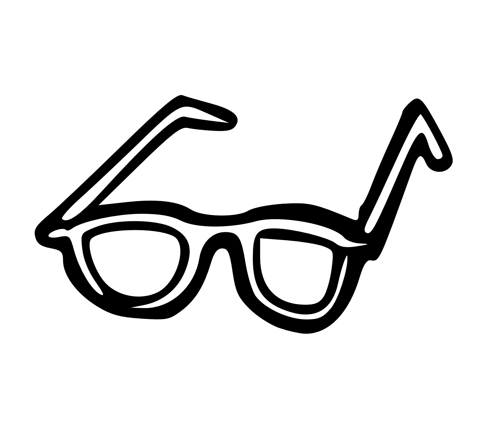

about me

[Introduction] Hi, I'm Katie. I started this website in January 2015 as a way of teaching myself web design. But enough about my website, let's talk about me. I enjoy crossword puzzles, biking to work, the smell of fresh linens, field hockey, independent films, David Sedaris, skateboarding, and FIFA. Most of all, I enjoy all things engineering, exploring the world, and recording music.
[Engineering] I graduated from RPI in Troy, NY in May of 2013 with a B.S. in Biomedical and Mechanical Engineering. I worked for Gulfstream as a Human Factors Engineer and at Boeing as a Systems Engineer. I then completed a MSc Computer Science degree at Imperial College London where I worked on a few interesting projects. I now work at Microsoft in Redmond, WA. A brief summary of a few highlighted projects I've worked on can be seen on my engineering page. My Github, LinkedIn, and resume are available as well.
[Travel] I began travelling extensively during my two semesters abroad in London in the fall of 2011. I have since been addicted to the feeling of arriving in a new place that I have yet to experience. People all over the world find different ways to satisfy even the most basic human needs: eating, sleeping, and socializing. I enjoy gaining a deeper understanding of others' cultures and sharing these experiences with my friends through my blog.

[Music] I dabbled with the piano and saxophone as a kid but didn't start taking music seriously until high school. I'm largely trained by the internet and began recording myself as a way of jamming with myself for lack of musical friends. I record with an AT2035 condenser mic and an SM58 dynamic mic which hook up to my FocusRite SafirePro14 interface. I have a MIDI keyboard by Korg (SP-250), a Fender Strat (MIM), a Yamaha F-310 acoustic guitar, my vocal chords, and a few other knick knacks that make sounds. I record originals and covers using Ableton. Feel free to check them out on my soundcloud.